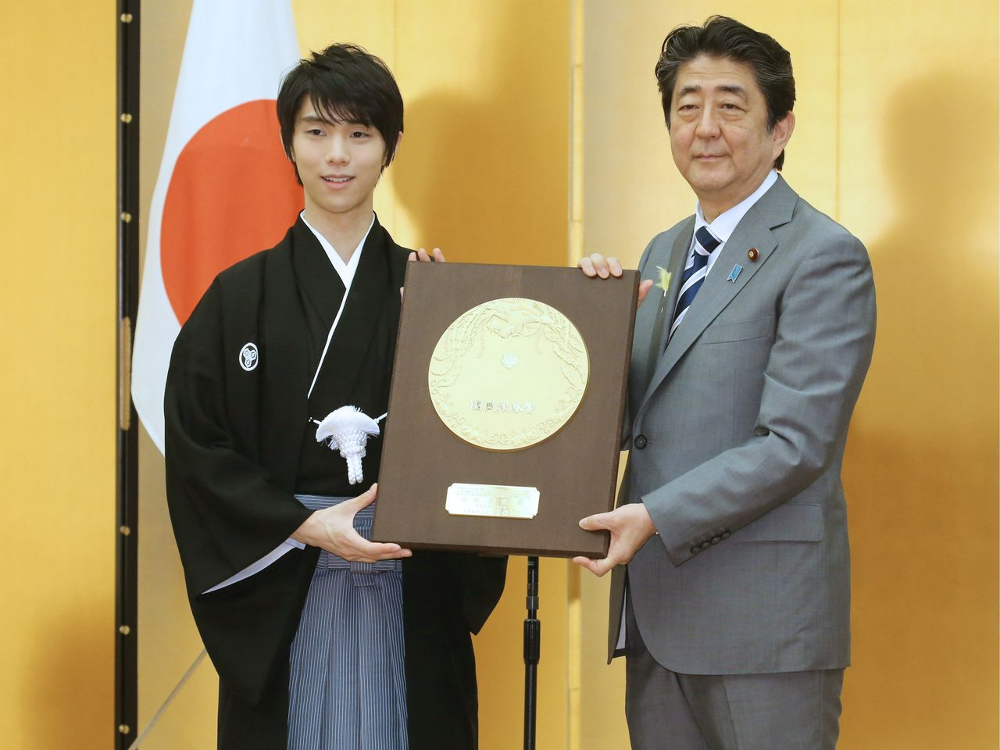

主页
职业生涯
荣誉成就
个人生活
羽生结弦：载入史册的荣誉殿堂
奥运赛事成就
年份
赛事
项目
成绩
荣誉
2014年
索契冬奥会
男子单人滑
总分280.09分
金牌
2018年
平昌冬奥会
男子单人滑
总分317.85分
金牌（卫冕）
2022年
北京冬奥会
男子单人滑
总分283.21分
第四名（尝试4A创历史）

图4：羽生结弦的奥运金牌及国际赛事荣誉勋章
世锦赛成就
年份
举办地
成绩
荣誉
2014年
日本埼玉
总分282.59分
金牌
2017年
芬兰赫尔辛基
总分321.59分
金牌
2015年
中国上海
总分271.08分
银牌
2016年
加拿大渥太华
总分282.23分
银牌
其他重要荣誉
大奖赛总决赛
：2013、2014、2015、2016年四连冠（史上最多）；
四大洲锦标赛
：2013年冠军（实现全满贯）；
世界纪录
：累计创造19次世界纪录（短节目、自由滑、总分均包含）；
特殊荣誉
：2018年获得日本政府「紫绶褒章」，2020年入选「世界体育名人堂」候选。